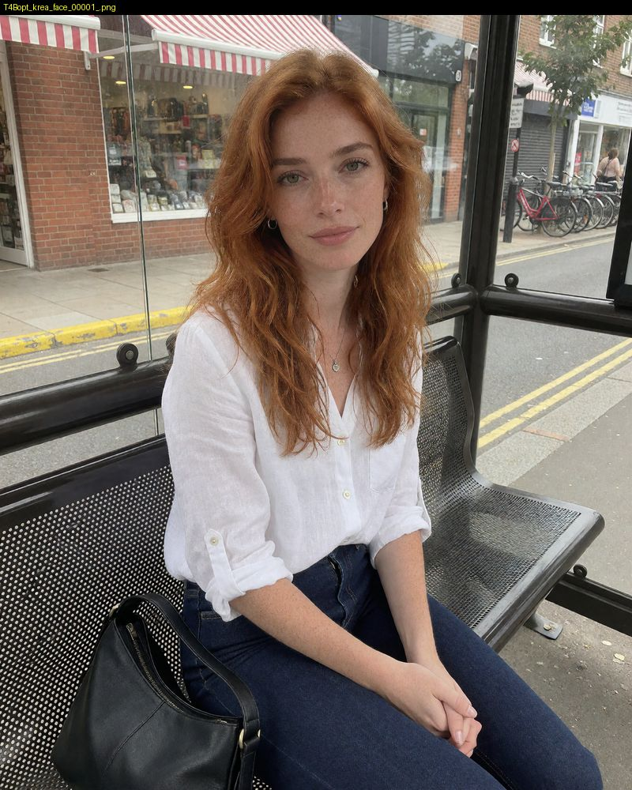
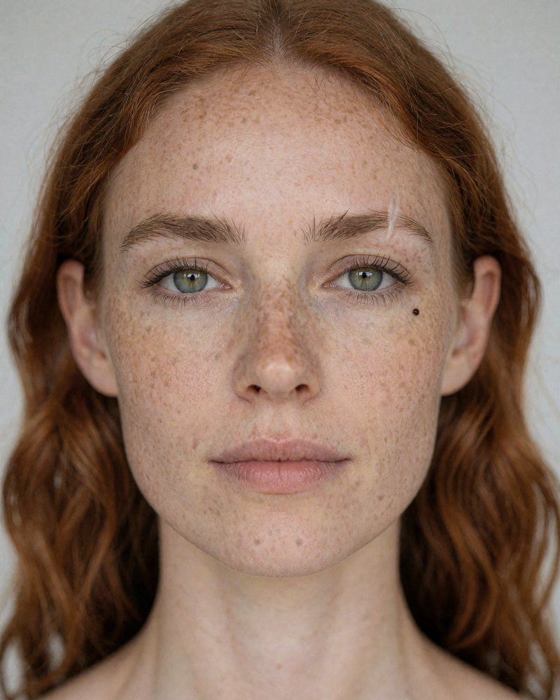

Как делать фотореалистичные кадры, править их, держать одно лицо персонажа и оживлять кадр в ролик со звуком — в ComfyUI, на компьютере с одной видеокартой на 16 ГБ и в арендованном облаке. От теории до готовых workflow, и каждый вывод измерен.
Четыре маршрута по книге. Главы можно читать и подряд: каждая начинается с блока «главное за минуту», а в конце есть ссылка на следующую (или клавиша →).


md/<глава>.md.Восемь выводов, которые чаще всего экономят время. Подробности и замеры — в главах по ссылкам.